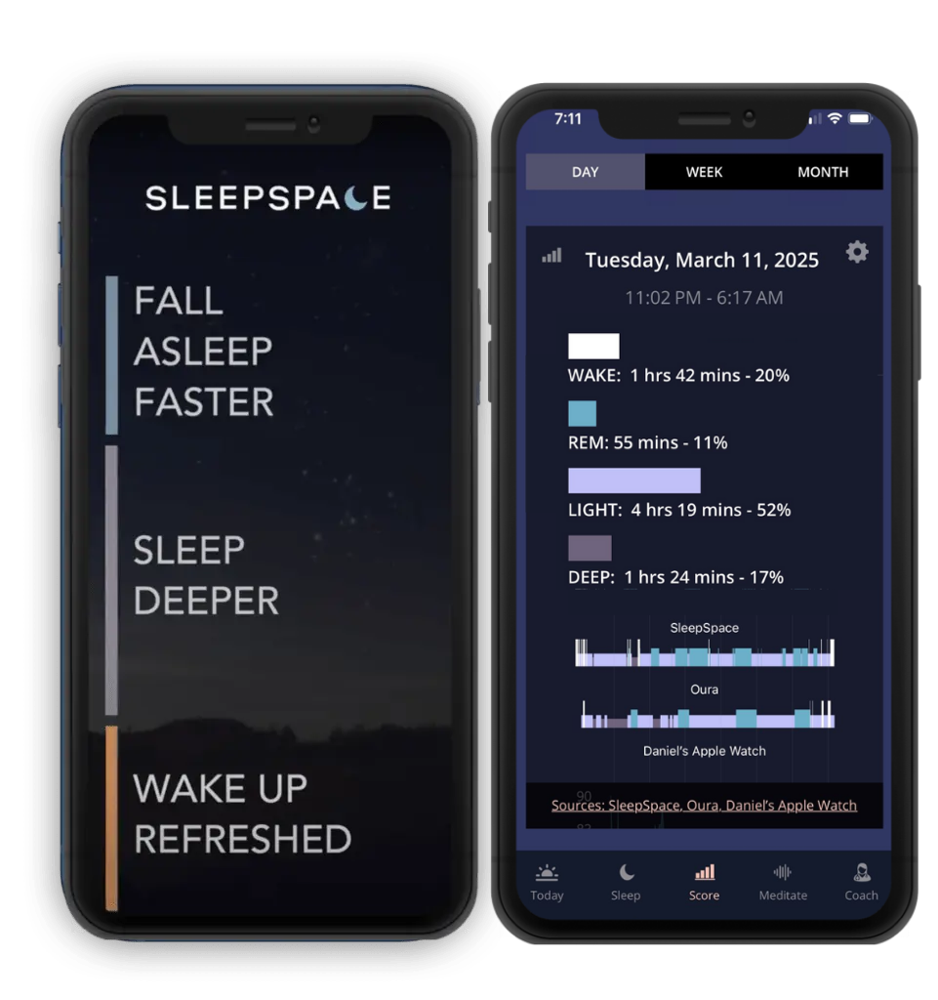
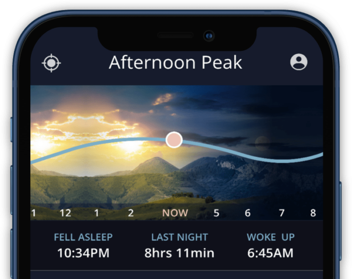
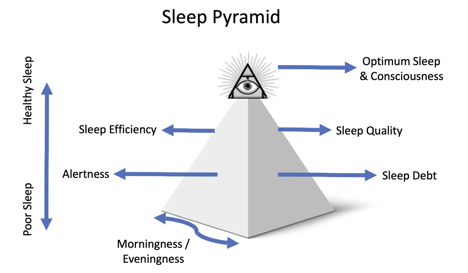
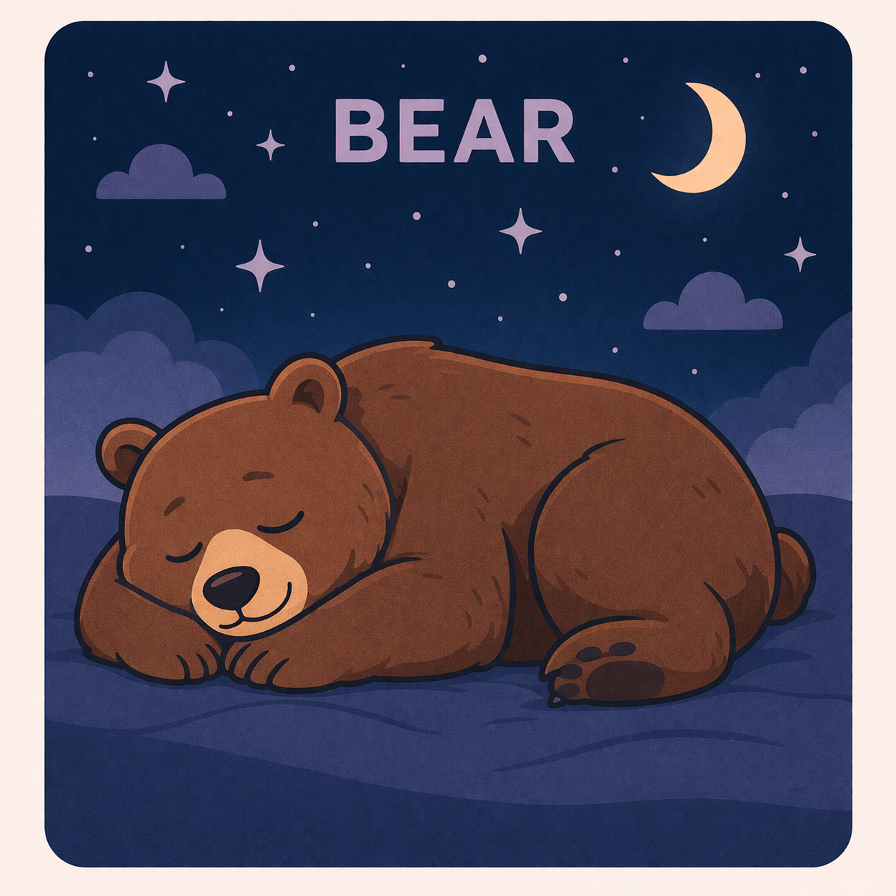

1. Sleep Quantity and Sleep Debt
First we ask whether you are simply getting enough sleep. Some people have a sleep problem. Others have a time problem. The difference matters.
Evidence-based sleep assessment by SleepSpace
Most people are not bad sleepers. They are misclassified sleepers. The Sleep Pyramid helps us see whether the real issue is sleep debt, circadian timing, insomnia, stress reactivity, airway strain, or a more specific overlap profile. That is how SleepSpace maps you into one of 64 Sleep Animals with a plan that actually fits.


The core framework
In Dr. Dan’s language, good sleep is not one thing. It is a stack of biological and behavioral layers. If we only ask whether you are tired, we miss the cause. The Sleep Pyramid gives us a sharper lens: how much sleep you get, how stable it is, when it happens, what is disrupting it, how activated your nervous system is, and how restored you feel the next day.

First we ask whether you are simply getting enough sleep. Some people have a sleep problem. Others have a time problem. The difference matters.
Falling asleep is only part of the story. Waking at 2 AM, waking too early, noise sensitivity, pain, and partner disturbance all belong here.
This is the rhythm layer. Are you a true night owl, a morning lark, a shift worker, a frequent traveler, or somebody whose schedule never fully stabilizes?
Airway issues, snoring, heat, pain, body discomfort, and restless movement can degrade sleep quality even when time in bed looks decent.
When the brain stays in go-mode, bedtime becomes effortful. Racing thoughts, grief, stress-triggered sleep, and insomnia patterns all live on this layer.
The final question is simple: are you actually waking up restored? If not, your sleep may be long enough on paper but not delivering real recovery.
Why this matters for sleep science and SEO readers alike
The internet is full of generic sleep tips. But generic sleep advice fails when your real issue is not “sleep” in the abstract. It may be chronic sleep debt, a circadian rhythm problem, airway strain, caregiving overload, temperature sensitivity, or a high-performing brain that refuses to switch off. The 64 Sleep Animals framework gives language to those differences, which is why it converts better than vague chronotype content and teaches better than a simplistic quiz.
How SleepSpace turns data into insight
SleepSpace combines what you report, what your schedule reveals, and how your nights actually look. We are not trying to label people for fun. We are trying to make the next step obvious.
Sleep debt, continuity, timing, airway or body load, stress arousal, and next-day restoration each get their own signal.
Racing mind, middle-of-the-night waking, heat, snoring, travel, new parent disruption, and schedule chaos all change how the night should be interpreted.
Instead of flattening everyone into four chronotypes, we choose a phenotype that feels recognizable and clinically useful.
A few of the most recognizable profiles
A healthy sleeper and a sleep-deprived shift worker should not get the same advice. Neither should a jet-lagged traveler and someone whose body clock is naturally delayed. The Sleep Animals turn those patterns into something people can remember, share, and act on.

Consistent Restorer

Shift Worker

Irregular Schedule Sleeper

Thunder Snorer

Pain Tosser

Half-Awake Sleeper
Searchable taxonomy
Search by animal, symptom, or sleep challenge. This section is intentionally content-rich so it can rank for real sleep questions people are searching for: insomnia, fragmented sleep, circadian rhythm, sleep debt, snoring, stress sleep, and recovery.
Built for action, not just description
Once you know whether you are a Cheetah, Fox, Gazelle, Bulldog, or Bear, the next question becomes easier: what should you do tonight, this week, and this month to get better sleep? That is why SleepSpace pairs the classification with a concrete plan instead of just a badge.
Focus on calming the nervous system, reducing sleep effort, and improving schedule reliability.
Focus on timing anchors, light exposure, and protecting the sleep window from social jet lag.
Focus on reclaiming quantity first, then make limited sleep opportunities more restorative.
Focus on quality, symptom follow-up, and removing hidden disruptors that keep the night from becoming restorative.
FAQ
It starts where chronotypes start, but it goes further. Morningness and eveningness matter, but so do insomnia patterns, fragmented sleep, breathing issues, pain, stress reactivity, travel, and sleep debt.
Yes. One person may be a Camel carrying sleep debt. Another may be a Dolphin getting enough time in bed but poor-quality recovery. Their interventions should not be the same.
Yes. That is exactly why the model exists. It was built to distinguish high performers, new parents, caregivers, long commuters, travelers, and schedule-disrupted sleepers instead of pretending they all share the same problem.
That is normal. Some people land in overlap profiles such as apnea-insomnia overlap, stress-triggered sleep, or positional breathing patterns. Others are still gathering enough data and show up as the Octopus, our versatile sleeper.
Ready to personalize your sleep?
If you want the clinical usefulness of a sleep assessment without drowning in jargon, the Sleep Pyramid and Sleep Animals are the bridge. Better sleep starts when the diagnosis feels accurate.